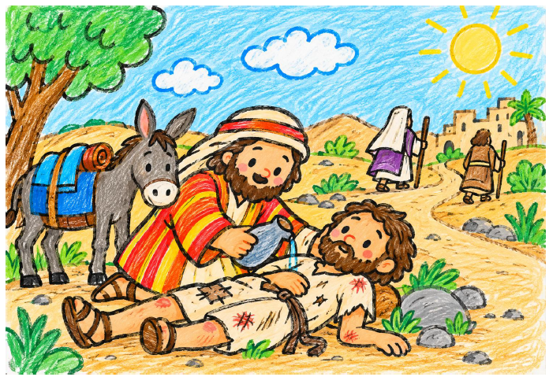
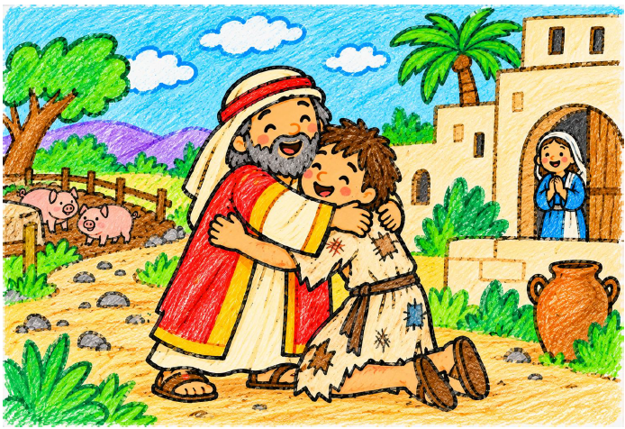
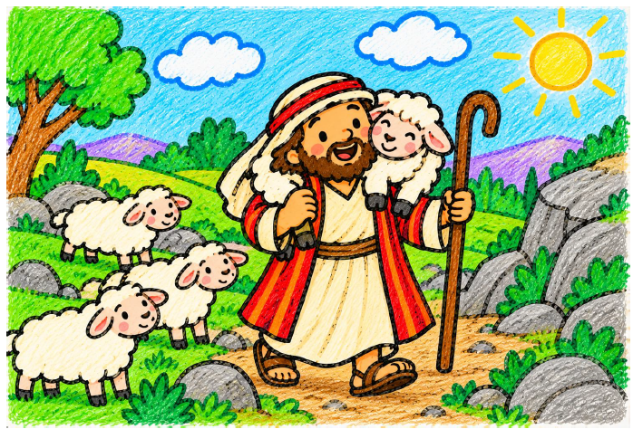
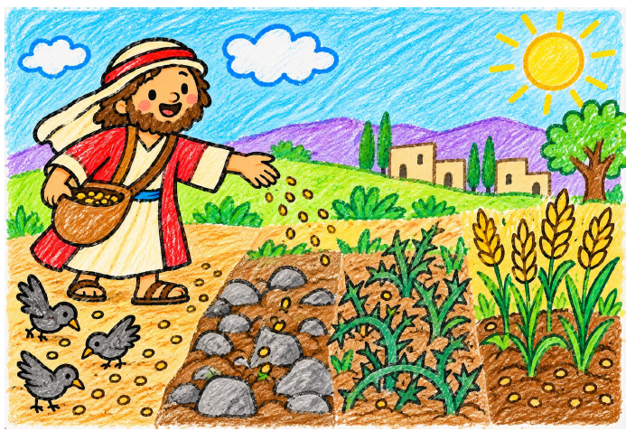

Las Parábolas
Las parábolas de Jesús son relatos breves y sencillos basados en la vida cotidiana.
📄 Abrir PDF
El Buen Samaritano
Aprendemos a ayudar a los demás y a tratar a todas las personas con amor.
📄 Abrir PDF
El Hijo Pródigo
Descubrimos el valor del perdón y el amor de un padre que recibe a su hijo.
📄 Abrir PDF
La Oveja Perdida
Aprendemos que cada persona es importante y que Dios cuida de todos.
📄 Abrir PDF
El Sembrador
Descubrimos cómo acoger la Palabra de Dios y hacer que dé fruto en nuestra vida.
📄 Abrir PDF